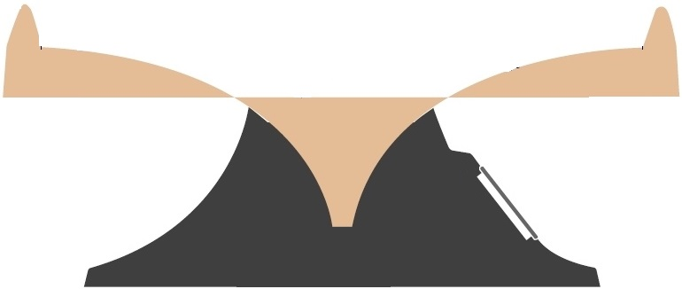

Non-inertial Reference Frames and Coin Wishing Wells (Part I)
Apparently I blog now...
Sometime ago, a friend of mine and I were curious about the physical principles that
cause coins to sprial so elegantly down the kinds of coin funnels one
might find at the local mall.
After searching online we were unable to find a
description that was both mathematically satisfying and sufficiently captured
the relevant physics. Having some free time, we decided to tackle this problem on our own
Let's talk Lagrangians
Loosely speaking, in physics , whenever one is working on a trajectory problem that
involves non-cartesian coordinates it's often easier to find the equations of motion
using the lagrangian framework, which (as we'll see for this problem) is far more convenient for solving
problems that aren't so well suited for Newton's formulation of classical mechanics.
In particular, the utility of Lagrange's framework is that it allows for us to work
in the so called generalized coordiantes . The principle being that if we're being clever,
these generalized coordinates can (and indeed should) be chosen to exploit geometry or symetries
present in the system we wish to analyze.

Looking at this image of a coin well cross section, we can imagine that it might be
useful to describe the motion of a coin about the funnel in terms of it's radius $\hat{r}$ from the center of the funnel,
it's azimuthal angle $\hat{\theta}$, and it's height $\hat{z}$ within the well.
Above, the lagrangian is a function of kinetic and potential energy. For the kinetic energy we have:
$$ T(x,y,z)= \frac{1}{2}m(\dot{x}^2+\dot{y}^2 +\dot{z}^2) \leftrightarrow T=\frac{1}{2}m(\dot{r}^2+r^2\dot{\theta}^2+\dot{z}^2) $$
the second expression for kinetic energy $T$ follows since we have $x = rcos(\theta)$ and $y= rsin(\theta)$.
Then, since the height $z$ is a function of the radius $r$ we have
$$ \dot{z}(r,\dot{r}) = \frac{c_1\dot{r}}{r^2} \leadsto
T=\frac{1}{2}m(\dot{r}^2+r^2\dot{\theta}^2+\frac{c_1^2\dot{r}^2}{r^4}) $$
The potential energy for this system comes simply as a result of gravity. From kindergarten we have,
$$ U(z) = mgz \rightarrow U(r) = mg(-\frac{c_1}{r}+c_2) $$
Therefore, we may write the lagrangian function $\mathcal{L}=T-U$ as
$$\mathcal{L}=\frac{1}{2}m(\dot{r}^2+r^2\dot{\theta}^2+\frac{c_1^2\dot{r}^2}{r^4}) - g(\frac{c_1}{r}+c_2) $$
At this point, before proceeding with Lagrange's equation, it's important to note that expression above doesn't
account for non-conservative forces (like friction) that dissipate the total energy of the coin as it proceeds down the well.
It could be useful to model these viscous effects using the seemingly reasonable assumption that these fricitonal
forces scaled proportionally with radial and angular velocity It turns out afterward, that this is actually a damn fine first order approximation..
As an educated guess one could assume that this dissapative force might look something like
$$F = \frac{1}{2}(k_r\dot{r}^2+k_{\theta}\dot{\theta}^2) $$
Where $k_r$ and $k_{\theta}$ are just some dissipative constants. This is the so called
Rayleigh dissipation function
For the radial component ,the Lagrange Equation (taking into account the dissipative friction effects we might expect the coin well to follow) may be written as
$$\frac{\partial \mathcal{L}}{\partial r}-\frac{\partial \mathcal{L}}{\partial t}\frac{\partial \mathcal{L}}{\partial \dot{r}} = \frac{\partial F}{\partial \dot{r}} $$
After substituting the lagrangian function $\mathcal{L}$ into the expression above, and after some tedious algebra we finally arrive at our first equation of motion
$$\boxed{\ddot{r}(\frac{r^4+c_1^2}{r^4})-\frac{2c_1^2\dot{r}^2}{r^5}+\frac{gc_1}{r^2}-r\dot{\theta}^2=\frac{k_r\dot{r}}{m}} $$ Bitchin'!
Doing precisely the same thing for the $\theta$ component, we arrive at the second equation of motion
$$\boxed{-(r^2\ddot{\theta}+2r\dot{r}\dot{\theta})=k\dot{\theta}} $$
If you're unfamiliar with lagrangian mechanics, allow me to take a moment to explain why this result is significant:
The complete equations of motion for this system were obtained despite the fact that we only specified the kinetic and potential energies of the coin without any
reference to Newtonian theory i.e we were able to do this without ever explicitly considering the forces acting on the coin.
Experiments and Simulations
I took the equations of motion above and plugged the differential equations above into MATLAB in order to simulate the coin's trajectory.

Taking just a cursory qualitave look at the general form of the trajectory looks remarkably like the trajectories one sees in the actual coin wells.
In the next part of this article, we'll take a look at how we can get more quantiative confidence that what we've derived corresponds to reality. Stay tuned!